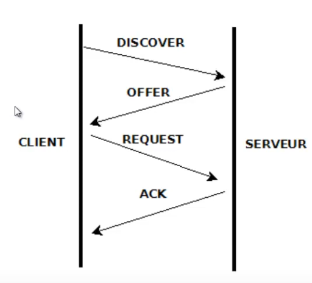

Service IP : DHCP
Plan
• Dynamic Host Configuration Protocol
• Fonctionnement
• Agent relais DHCP
• Rappel : interface cliente DHCP
• IOS DHCP Server : mise en place
• IOS DHCP Server : baux
• IOS DHCP Server : paramètres
• Commandes d'information
Dynamic Host Configuration Protocol
• Octobre 1993 : première définition (RFC 1531)
◇ comme extension de BOOTP (Boostrap Protocol)
▪ couvre l'ensembre des configuration IP
- adresse IP, masque, passerelle par défaut
- adresses des servers de noms (DNS et NBNS (WINS))
• modifié et complété par la RFC 2131 (Mars 1997)
◇ référence ipv4 actuelle
• adapté à l'ipv6 depuis juillet 2003 (RFC 3315)
Fonctionnement
• DHCP DISCOVER
◇ broadcast (255.255.255.255)
◇ port 67
• DHCP OFFER
◇ réponse du serveur ayant réçu la requête
▪ proposant une adresse IP et un masqie
▪ et inquant l'adresse IP du serveur
◇ port 68
• DHCP REQUEST
◇ demande d'assignation de l'adresse proposée
▪ et l'envoi des valeurs des paramètres
• DHCP ACK
◇ accusé de réception
◇ assigne l'adresse IP pour une durée définie
▪ ainsi que d'autres paramètres éventuels (passerelle par défaut, DNS, WINS)

Agent relais DHCP
• les datagrammes DHCP sont limités à un domaine de broadcast
◇ nécessite donc des serveur DHCP ou des serveurs relais sur chaque segment
◇ transforme les requêtes mutlicast en de l'unicast
• défini par la RFC 1542
Rappel : interface cliente DHCP
(config-if)# ip address dhcp
IOS DHCP Server : mise en place
• création d'un pool d'adresse
(config)# ip dhcp pool pool-ID
(dhcp-confg)#
◇ pool-ID : chaîne de caractères identifiant le pool d'adreses
• définition du sous-réseau supporté
(dhcp-config)# network 192.168.2.0 255.255.255.0
IOS DHCP Server : baux
• définition de la durée de bail
(dhcp-config)# lease days hours minutes
IOS DHCP Server : paramètres
• définition du/des routeur(s) par défaut
(dhcp-config)# default-router adresse1 adresse2 ...
• adresses du/des serveur(s) DNS
(dhcp-config)# dns-server adresse1 adresse2 ...
• nom de domaine DNS
(dhcp-config)# domain-name name
Commandes d'information
• informations d'état de chacun des baux alloués
# show ip dhcp binding
• statistiques et intervales d'adresses d'un pool d'adresses
# show ip dhcp pool [poolname]
• statistiques du serveur DHCP
# show ip dhcp server statistics
• afficher les conflits
# show ip dhcp conflict
Ce qu'on a couvert
• DHCP
◇ fonctionnement
◇ configuration du client
◇ configuration du serveur
▪ pool d'adresses
▪ paramètres
▪ durée de bail